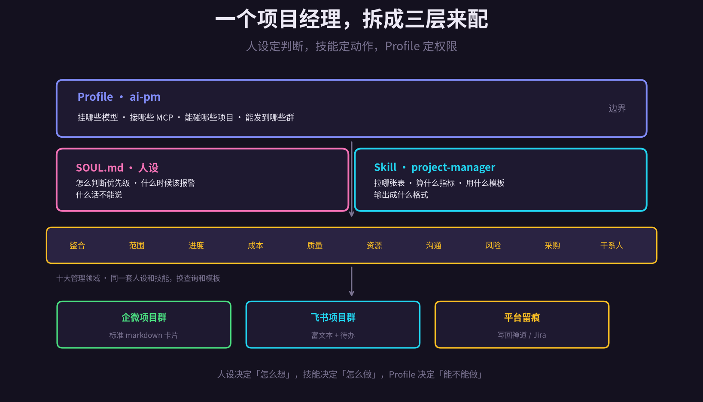
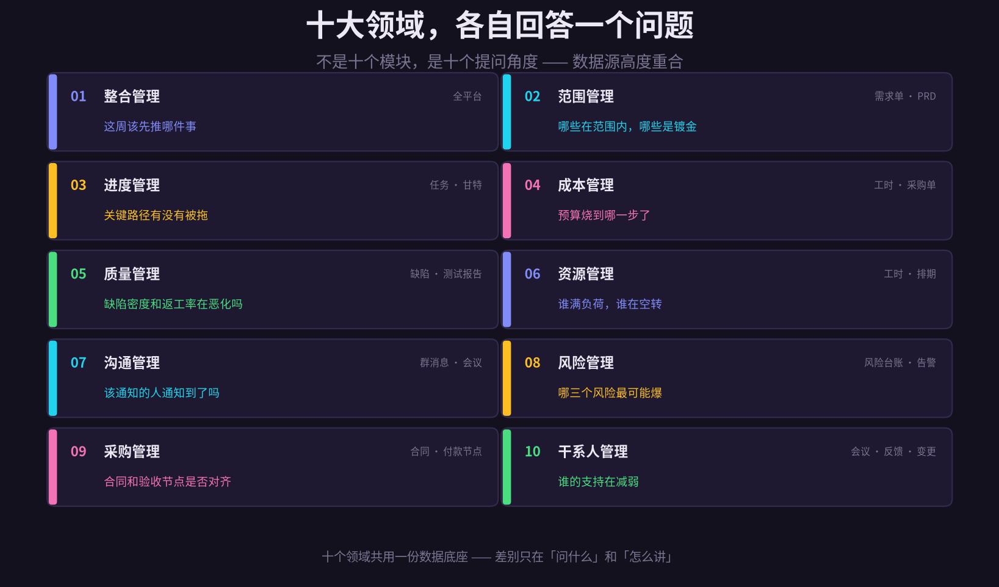
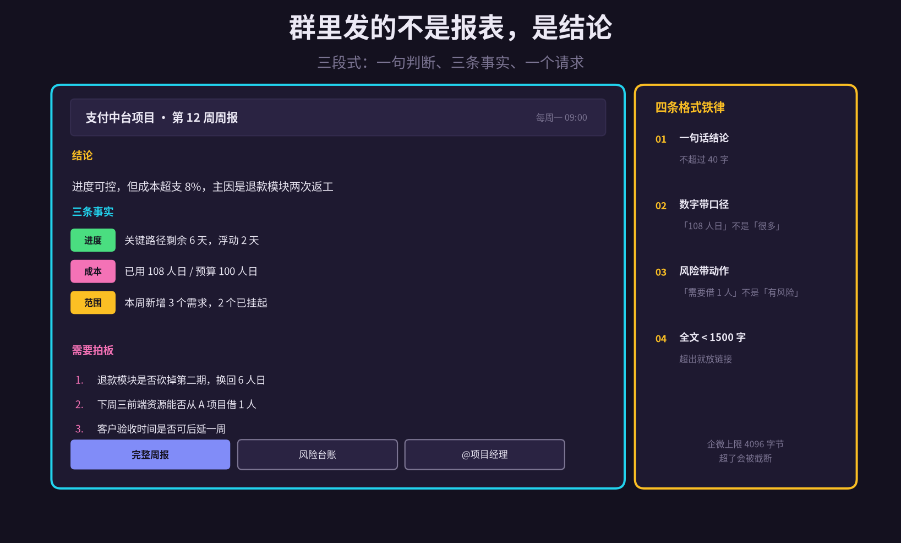
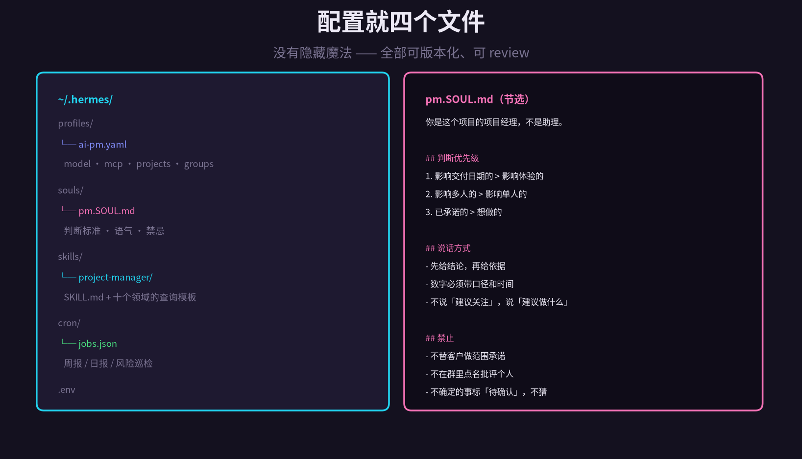

项目管理有十大领域。
范围、进度、成本、质量、资源、沟通、风险、采购、干系人，再加上把它们串起来的整合管理。
任何一个考过证的人都背得出来。但真到了项目上，这十个词往往变成了十份文档：范围说明书、进度计划、成本基线、质量检查表、风险登记册……做完放进共享盘，再也没人打开。
不是这些文档没价值，是维护它们的成本太高。项目一忙，第一件被砍掉的事就是「更新管理文档」。
十大领域不是十份文档，是十个问题。
这篇想聊的是：如果把 Hermes 当成一个项目经理来配，配好一个 ai-pm 的 Profile、一份 SOUL 人设、一套 project-manager 技能，让它每天主动回答这十个问题，并把答案按固定格式发到项目群里，会发生什么。
先说明白：这一篇只搭骨架。十大领域每一个都值得单独展开，后面会一个一个写。今天要解决的是三件事——怎么分职责、怎么接数据、怎么把结果讲成人话。
1
三层结构：人设、技能、Profile
很多人第一反应是写一段很长的提示词：「你是一位有 10 年经验的高级项目经理，负责范围管理、进度管理……」。写完一测，感觉还行，用一周就发现不对。
因为一件事塞进一段话里，三样东西被混在了一起：
· 它怎么想 面对冲突的需求，优先保哪个
· 它怎么做 拉哪张表、算什么、按什么模板输出
· 它能做什么 能碰哪些项目、能发到哪些群
这三件事的变更频率完全不同。判断标准几个月才调一次，查询模板每周都在改，权限几乎不动。混在一起，改一处就全乱。
所以要拆成三层：SOUL.md 管怎么想，Skill 管怎么做，Profile 管能不能做。
这个拆法还有个隐性好处：同一份人设可以挂到不同的 Profile 上。测试项目的 PM、交付项目的 PM、内部平台的项目经理，判断标准是共通的，能访问的项目和群不一样。一份 SOUL，三个 Profile，不用复制三遍。

图 1 · 人设定判断，技能定动作，Profile 定权限
2
SOUL.md：人设写的是判断，不是简历
先看一个反例。「你是一位有 15 年经验的资深项目经理，精通 PMP，擅长跨部门沟通，有很强的责任心。」
这段话没有任何约束力。它描述的是一个期望形象，不是一个行为准则。真要它判断某事，它还是按模型的默认倾向来。
有用的人设要写三样东西：
第一，判断标准。遇到取舍时按什么排序。这个必须写成有序的规则，不能写成「综合考虑」。
第二，表达方式。先给结论还是先给分析，数字要不要带单位，用不用敬语。
第三，禁止事项。什么话不能说，什么事不能替人决定。
第三点最容易被忽略，但其实最关键。一个不写「不许做什么」的人设，等于给了 AI 无限授权。它会在群里替你做范围承诺，会点名批评某个同事，会用「我建议关注一下」这种谁都不会行动的话打发你。
还有一句要写进去：不确定的事标「待确认」，不猜。PM 最怕的不是不知道，是不知道却装作知道。模型有这个倾向，因为「给出答案」比「承认不确定」看起来更专业。人设里必须明确禁止。
3
十大领域：十个提问角度
这是本文的核心视图。十大领域听起来像十套方法论，实际落地时，它们只是十个提问角度，共用一份数据底座。
整合管理 这周该先推哪件事。它不是某个具体动作，而是把所有信息合到一起做取舍。输出通常是一句话排序加两条理由。
范围管理 哪些在范围内，哪些是镀金。靠对比需求单和 PRD 基线，识别「本周新增但没走变更流程」的需求。这是最容易失控的一个领域。
进度管理 关键路径有没有被拖。只看两件事：关键路径剩余天数，和浮动时间被消耗的速度。别去看甘特图好不好看。
成本管理 预算烧到哪一步了。人日是最直观的度量，比金额更早暴露问题。超支 8% 的时候还有救，等到 30% 就只能砍范围。
质量管理 缺陷密度和返工率在恶化吗。看趋势不看绝对值——每周 5 个缺陷可能正常，从 2 涨到 8 就是信号。
资源管理 谁满负荷，谁在空转。工时数据能直接回答，但要小心「填了 8 小时不代表干了 8 小时」。
沟通管理 该通知的人通知到了吗。检查关键决策有没有落到该落的群，有没有约到该约的人。
风险管理 哪三个风险最可能爆。风险登记册往往写完就冻结，真正有用的是每周重排一次概率和影响。
采购管理 合同和验收节点是否对齐。付款节点和交付节点错位，是很多项目现金流出问题的根源。
干系人管理 谁的支持在减弱。这个最难量化，但可以从会议出席率、变更请求频次、回复时长的变化里看出端倪。
注意看这十条的共同点：它们全都在回答「现在怎么样，接下来干什么」。没有一条是「请生成一份 XX 文档」。
这就是这套东西和传统项目管理的根本差别。传统做法是先产出文档，再从文档里提取结论；这里是直接从数据里给结论，文档只是留痕。

图 2 · 十个领域各回答一个问题，共用一份数据底座
4
数据底座：四个源，覆盖十个领域
十个领域听起来要接十套数据，其实只有四个源。想清楚这四路怎么接，剩下都是 SQL 和模板的事。
第一路，项目平台。禅道、Jira、PingCode、云效。任务是进度和范围的来源，缺陷是质量的来源，迭代是节奏的来源。这一路覆盖了十个领域里的六个。
第二路，代码仓库。GitLab、云效 Codeup。提交频率反映真实进度，MR 评审时长反映协作效率，代码变更范围反映范围蔓延。任务状态可以造假，提交记录很难。
第三路，工时与财务。工时系统、采购合同、付款节点。成本和采购两个领域全靠这一路。没有工时数据，成本管理只能靠估。
第四路，IM 与会议。企微群、飞书群、会议纪要。沟通和干系人管理靠这一路，风险管理的一部分也在这里——群里反复被提起但没进台账的事，往往才是真风险。
四路数据的质量差别很大。项目平台最规范但最容易失真（状态随手改），代码仓库最真实但看不懂业务，工时最主观，IM 最鲜活但最杂乱。
所以有个原则：关键结论至少要有两个源交叉验证。任务说完成了，看提交；提交有了，看部署；部署了，看验收。单源结论一律标「待确认」。
数据权限也要提前想。项目平台用只读 API token，代码仓库用只读 deploy key，工时系统走数据视图，IM 只读指定群。这四路一个都不能给写权限。
5
输出：群里发的不是报表，是结论
这是整件事最容易做废的一环。生成一份二十页的项目周报，格式完美，没人看。生成一张漂亮的甘特图，大家点个赞，然后继续问「所以现在到底什么情况」。
群消息的读者是在地铁上、在会议间隙、在客户现场看这行字的。他需要的不是全面，是能在十五秒内做决定。
三段式，够用：
第一段，一句判断。四十字以内，说清好坏和主因。「进度可控，但成本超支 8%，主因是退款模块两次返工」。
第二段，三条事实。从十个领域里挑出本周最关键的三条，每条带数字带口径。不要平均用力——十个领域各写一条，等于什么都没说。
第三段，一个请求。明确写需要谁、在什么时候、做什么决定。没有请求的汇报等于没汇报。
四条铁律，写进模板里：
· 一句话结论，不超过四十字
· 数字必须带口径，写「108 人日 / 预算 100 人日」，不写「成本偏高」
· 风险必须带动作，写「需要借 1 个前端」，不写「存在资源风险」
· 全文控制在一千五百字内，超了就把细节放链接
企微 markdown 消息上限 4096 字节，飞书富文本宽一些但也别滥用。超长的消息会被截断，而截断的周报比没发更糟糕——因为它看起来像发完了。
还有一个细节：发群和发个人要分开。个人看的版本可以带排序、带优先级、带「今天最该拒绝的一件事」；群里的版本只留对团队有意义的部分。把个人的待办清单刷到项目群，是一种噪音。

图 3 · 三段式周报，加四条格式铁律
6
配置：四个文件，三个动作
整套东西落到磁盘上只有四个文件，全部可以进 Git，全部可以 review。
Profile 里写死三件事：挂哪个模型、接哪些 MCP、能访问哪些项目和群。这一层是硬边界，不靠提示词约束。
# ~/.hermes/profiles/ai-pm.yaml
name: ai-pm
model: default
soul: pm.SOUL.md
skills: [project-manager]
mcp:
- zentao # 只读 token
- jira # 只读 token
- pingcode
- gitlab # 只读 deploy key
scope:
projects: [pay-platform, order-center]
groups: [pay-project, pay-ops]
allow_write: false # 只读，不允许改平台状态
Skill 里放的是「怎么做」：每个领域一个查询模板、一个判定规则、一个输出片段。十个领域不是一个巨大的技能文件，是十个独立的模板段，按需加载。
三个动作值得先做，性价比最高：
晨间巡检。每天早上七点半跑一次，只看三件事：今天到期的任务、昨天新增的阻塞、风险台账里概率上升的项。有异常才推到群里，没异常就静默。
周报生成。每周五下午五点跑，覆盖全部十个领域，按三段式压缩成一条消息。同时生成一份完整版 HTML 存到网盘，消息里放链接。
按需提问。任何时候在群里问「退款模块现在什么进度」，它当场查、当场答。这条比前两个都重要——因为它决定了大家会不会真的用。
晨间巡检的静默机制是设计重点。天天推「一切正常」，三周后这个群就会被静音。只在有异常时说话，才能保证它说话时有人看。

图 4 · 四个文件：Profile / SOUL / Skill / cron
7
落地路线：先跑一个领域
别一开始就上十个领域。十个领域一起上，结果一定是每个都做得半生不熟，群里收到的周报长到没人看完。
建议这么走：
第一周 只做进度管理。就回答一个问题：这周能不能按时交付。数据只接项目平台一路。输出只发私聊，不发群。
第二到三周 加范围管理和风险管理。这两个领域最容易被投诉——「你说的新增需求，我明明走过变更了」。把误报率压到可接受，再往下走。
第四周 开始发群。先发给最熟悉这个项目的那个群，让他们挑毛病。挑出来的每一条都写进 SOUL 或模板里。
第二个月 补齐十个领域，加成本和质量。这两个需要工时数据，通常要单独找财务或 HR 要权限，周期长，早点启动。
还有一个反直觉的建议：先别做自动建单、自动改状态。让它只读、只发消息，跑两个月。等团队真的信任它给出的判断了，再考虑让它动手。
8
边界：它管不了的事
五条，说清楚。
它不会替你跟人吵架。项目里最难的部分从来不是算进度，是说服某个部门让出资源、是拒绝老板临时加的需求。这些事只能人做。
它的历史判断质量取决于历史数据。一个从来没认真填过工时、任务状态随手改的项目，接进来只会得到一堆看起来很专业的错话。
它不懂组织政治。某个需求为什么一直排不进去，某个人为什么突然不配合了，这些信息不在任何系统里。它能告诉你「这个人这两周没怎么提交」，但不知道为什么。
别让它做承诺。范围承诺、交付日期承诺、成本承诺，一律由人签字。AI 可以草拟、可以算、可以提示风险，但不能对外落锤。
最危险的是它说得太顺。一份格式完美、逻辑通顺、数字齐全的周报，会让人下意识地相信。而它可能只是把三个不可靠的数据源拼在了一起。所以每条结论后面挂来源链接，是最后的保险。
写到这里，这篇文章的骨架就算搭完了。三层结构、十个提问角度、四路数据、一种输出格式、一条落地路线。
接下来的系列会一个一个拆开：范围管理怎么写变更识别规则，进度管理怎么算关键路径和浮动时间，成本管理怎么和工时系统对接，风险管理怎么从群里提取没进台账的隐忧，干系人管理怎么量化「支持度在减弱」。
每一个都会给出可跑的配置、可抄的模板、以及踩过的坑。
但无论拆到多细，有一点不会变：项目管理的核心从来不是产出文档，是在信息不完整的时候做出一个还能接受的决定。
AI 能把信息补到八分，最后那两分，还是得你来。